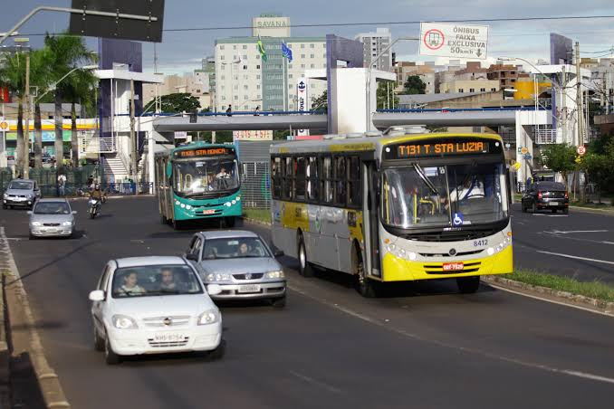
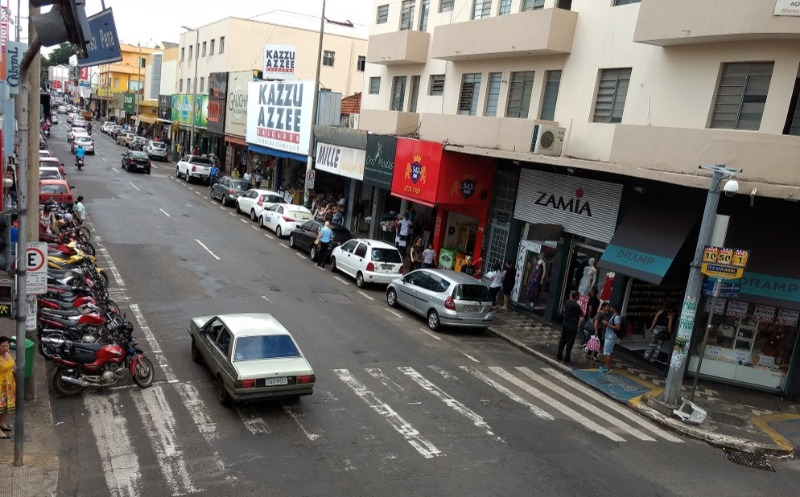

Parque do Sabiá recebe iluminação inteligente
Uberlândia instala iluminação inteligente no Parque do Sabiá
16 de julho de 2026
O Parque do Sabiá recebeu um novo sistema fictício de iluminação inteligente em suas pistas de caminhada. As lâmpadas de LED possuem sensores que aumentam a intensidade da luz quando identificam movimento no local.
De acordo com a administração do parque, o objetivo é ampliar a segurança dos visitantes no período noturno e reduzir o consumo de energia elétrica.

Estudantes criam app para ajudar no transporte urbano
15 de julho de 2026

Feira de tecnologia movimenta o centro da cidade
11 de julho de 2026
